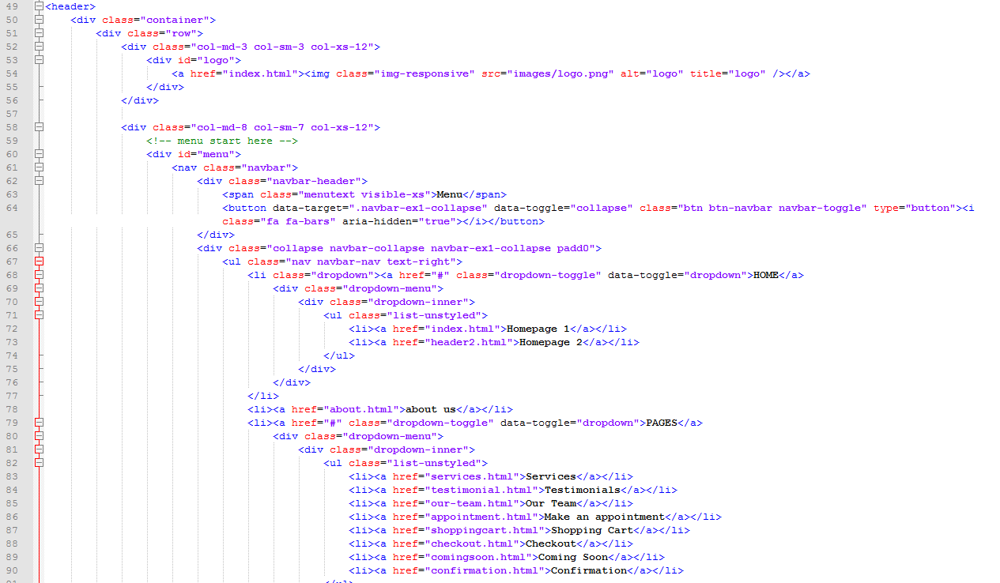

This is not end here, Template have nicely design Blog Section . Also have special pages like Menu Review page, Shopping info, Cart page, Payment method page, Thank you Page after payment done, About Us, Gallery, Contact us. Restaurant food and Drink Html Template can be use to convert any framework and start website easily.
if you are thinking to start restaurant then you are right place. Our Restaurant food and Drink Html Template make your dream to reality. It contains features that count for your single penny you will spent to buy this template.
Template included with 23 pages. Beside it, Each Page are easily to use and custom, feel free to work with it.
Also take care of Blog section. Blog pages are designed very carefully and have elegant design. These days, Blogging has its own importance for content marketing or give information about new product or service to your user.
1.Html Structure
We are following Simple html structure. Any user can edit our template according to their needs. Main content is looping under div "container" Here is Snapshoot.

2.Folder Structure
Restaurant food and Drink Html Template is well designed and well structured. Files and Folders are also maintained in specific structured. All html files are present outside and other files like .css and javascript files are placed inside css and js folder respectively. Here is Snapshoot.

3.Css File
we use 5 css files for to make this template. We also used BootStrap.Here is list of css files used in this Template. Please make sure, you must not miss any of css files from this list. Otherwise template will not work properly
<link rel="stylesheet" href="bootstrap/css/bootstrap.css"> <link rel="stylesheet" href="bootstrap/css/bootstrap-select.css"> <link rel="stylesheet" href="font-awesome/css/font-awesome.css"> <link rel="stylesheet" href="js/owl-carousel/owl.carousel.css"> <-- ========== Main Style CSS ========== --> <link rel="stylesheet" href="css/style.css">
4.Js File
Following js files are required to be added to your HTML page to make this Template work
<src="js/owl-carousel/owl.carousel.min.js" >
<src="js/dist/js/bootstrap-select.js" >
<src="bootstrap/js/bootstrap.min.js" >
<src="jquery.2.1.1.min.js" >
<src="photo-gallery.js" >
4.Psd File
23+ Psd files are used in your HTML Template.
- 01_homepage_v1.psd
- 02_homepage_v2.psd
- 03_our_menu.psd
- 04_reservation.psd
- 05_about_us.psd
- 06_contact_us.psd
- 07_our_gallery.psd
- 08_single_gallery_view.psd
- 09_our_blogs.psd
- 10_blog_view.psd
- 11_our_shop_grid View.psd
- 12_our_shop_list_view.psd
- 13_single_shop_view_description.psd
- 14_single_shop_view_reviews.psd
- 15_single_shop_view_add_review.psd
- 16_search.psd
- 17_sign_up.psd
- 18_sign_in.psd
- 19_shopping_cart.psd
- 20_shopping_info.psd
- 21_payment_method.psd
- 22_thanks.psd
- 23_testimonials.psd
5.Header
We have added two different Header layout. you can easily choose which header from four and apply. It is simple. Just make changes in file.
Footer
Template contains two Footer designs. Footer with four Columns and two rows. user can select which footer, they should show from Template. Like this.
<div class="col-sm-3"> <h5>LInks</h5> <ul class="list-unstyled"> <li> <a href="about.html"><i class="fa fa-caret-right"></i>FAQs</a> </li> </ul> </div>
6.List of Pages
Restaurant food and Drink Html Template is consist of 18+ Pages. It is complete Html Template which can be easily convert into WordPress & any E-Commerce Framework. Here is List of pages present in this Template
- Home page
- Home page v2
- Home page v3
- About us
- Reservation
- Our menu
- Our gallery
- Testimonial
- Search
- Sign in
- Sign up
- Thanks
- Shop
- Shopdetail
- Shoppingcart
- Our blog
- Blog detail
- Contact us
Template Ready for use any Restaurant website
Sources and Credits
We used BootStrap and Owl Slider.
- BootStrap (http://getbootstrap.com/)
- Owl Slider (http://owlgraphic.com/owlcarousel/)